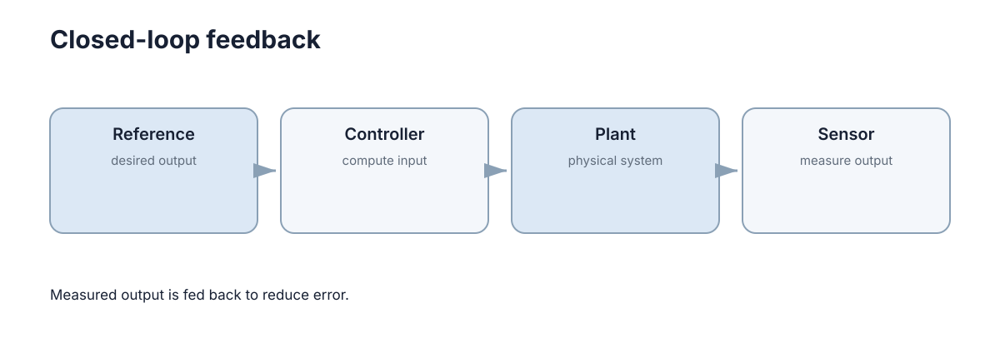

Feedback & Stability
反馈控制的核心思想很简单：不要只相信模型预先算好的动作，而要不断测量实际结果，用误差修正下一步输入。 这也是机器人能够抵抗扰动、模型误差和负载变化的根本原因。稳定性则是这套机制能够长期成立的前提条件——一个不断发散的闭环，无论瞬态响应多漂亮都没有工程价值。

这一章按“为什么需要反馈 → 反馈如何纠偏 → 什么情况下反馈会失效”的顺序展开：先建立稳定性的严格定义，再看时域与频域两类判据，最后落到实机上最常见的失稳原因和排查顺序。
开环控制的误差来源
开环系统直接执行预先计算的输入，例如“给电机 30% 电压持续 2 秒”。如果地面摩擦、负载或电池电压发生变化，最终位置就会偏离预期，因为控制器没有看到实际结果。
误差按来源可以分成几类，它们对任务的影响方式并不相同：
| 误差来源 | 具体表现 | 是否随时间累积 |
|---|---|---|
| 模型与参数不确定性 | 质量、转动惯量、摩擦系数标称值偏离真值 | 是，随运动距离累积 |
| 环境扰动 | 坡度、风阻、地面打滑、碰撞 | 是，且不可预测 |
| 执行器非理想 | 死区、饱和、反冲、响应延迟 | 是，误差随指令切换累积 |
| 能源与热状态 | 电池电压下降、电机升温后力矩衰减 | 是，缓慢漂移 |
| 初始条件偏差 | 起始位姿与假设不一致 | 否，但会整体平移轨迹 |
其中最危险的是角度误差：角度偏差会改变后续所有平移的方向，因此轨迹误差不是线性增长，而是随距离平方级放大。这也是为什么纯开环的移动机器人走几米还准，走几十米就完全不可用。
开环并非总是错误选择。当任务足够短、扰动可忽略、且反馈传感器不可得或成本过高时，开环仍然是合理方案：固定工位上的分拣动作、标定良好的步进电机走固定步数、一次性开火的执行机构都属于这一类。判断标准是误差在任务周期内是否仍低于容许上限。
负反馈的纠偏机制
闭环则测量输出 \(y(t)\)，与目标 \(r(t)\) 比较得到误差
再令控制器根据 \(e(t)\) 产生新的输入 \(u(t)\)。只要测量和执行链仍然有效，扰动造成的偏差就能被后续控制动作纠正。
最简单的比例反馈为
若输出低于目标，误差为正，控制器增加输入；输出高于目标时则反向修正。这就是负反馈。它的价值不在某个具体公式，而在于让控制动作依赖实际状态，而不是只依赖事先模型。
用一个一阶系统可以看清反馈到底改变了什么。设对象为
施加比例反馈 \(u=K_p(r-x)\) 后，闭环变成
同一个系统的时间常数从 \(1/a\) 变成 \(1/(a+bK_p)\)：增益把“系统自己的响应速度”替换成了“由我们设计的响应速度”。更重要的是，闭环对参数变化的敏感度被压低为原来的 \(1/(1+bK_p/a)\) 量级——对象参数漂移 \(10\%\)，闭环输出的漂移可能只有百分之几。这就是反馈最本质的收益：用测量换取对模型的低依赖。
但反馈不是免费的：
| 维度 | 开环 | 闭环 |
|---|---|---|
| 扰动抑制 | 无（靠任务短） | 有，且随增益增强 |
| 对模型的依赖 | 高，参数必须准 | 低，只要求模型误差有界 |
| 传感器需求 | 无 | 必须有，且引入噪声与延迟 |
| 主要失效模式 | 缓慢偏移 | 振荡、噪声放大、饱和、延迟失稳 |
| 执行代价 | 恒定 | 通常更高，且可能激励未建模动态 |
反馈增益并非越大越好：增益过高会放大测量噪声、让执行器频繁饱和，并且在存在延迟时更容易产生振荡。这条权衡线正是本章后半部分要量化的对象。
稳定性：定义与判据
稳定和“误差当前是否很小”不是一回事。一个系统现在恰好在目标附近，但稍微受到扰动就不断发散，它仍然是不稳定的。
工程上通常关心三个强度递增的概念：
- Lyapunov 稳定：初始扰动后状态保持有界，不要求回到原点；
- 渐近稳定：扰动后状态最终回到平衡点；
- 指数稳定：收敛速度有下界，工程上最常用，因为它能把“多久回到范围内”写成明确的时间常数。
对线性连续系统
若 \(A\) 的所有特征值实部都小于零，状态会随时间衰减；离散系统 \(x_{k+1}=Ax_k\) 则要求特征值位于单位圆内。
| 系统类型 | 稳定判据 | 直观含义 |
|---|---|---|
| 连续线性 | \(\operatorname{Re}\lambda_i(A)<0\) | 所有模态都在衰减 |
| 离散线性 | \(\lvert\lambda_i(A)\rvert<1\) | 每步都把偏差缩小 |
| 非线性 | 平衡点附近线性化后判据成立，或存在递减的 Lyapunov 函数 | 局部结论；全局需要额外条件 |
| 含纯延迟 | 特征方程含 \(e^{-sT}\)，无法直接用有限维判据 | 延迟消耗相位，可能先于增益失效 |
非线性系统的常用做法是：在工作点线性化得到 Jacobian，按线性判据得到局部结论；全局性质则依赖 Lyapunov 函数是否存在。入门阶段不必展开完整稳定性证明，但必须建立一个概念：控制器首先要保证系统不发散，然后才谈快慢和精度。
时域响应指标
给系统一个阶跃目标，可以观察几个直观指标：
- 上升时间：多快接近目标；
- 超调：是否冲过目标太多；
- 稳定时间：多久进入并保持在允许误差范围；
- 稳态误差：最后是否仍有长期偏差。
这些指标可以借助二阶标准型定量把握。对
阻尼比 \(\zeta\) 单独决定了超调量
而稳定时间近似为 \(t_s\approx 4/(\zeta\omega_n)\)。于是设计过程变成一个双变量问题：\(\omega_n\) 决定多快，\(\zeta\) 决定多稳。
| \(\zeta\) | 超调 \(M_p\) | 工程含义 |
|---|---|---|
| 0.3 | 约 37% | 明显过冲，通常不可接受 |
| 0.5 | 约 16% | 快但有可见超调 |
| 0.7 | 约 5% | 常用折中，接近“最优阻尼” |
| 1.0 | 0% | 无超调，响应变慢 |
因此把“响应更快”简单等同于“增益更大”是危险的：提高增益同时改变 \(\omega_n\) 与 \(\zeta\)，可能缩短上升时间却把系统推向高振荡区。性能指标之间是权衡关系，不是可以同时最优的目标列表。
增益裕度与相位裕度
时域指标适合验收，但设计阶段更需要知道“离不稳定还有多远”。对开环传递函数 \(L(s)\)，闭环为 \(1/(1+L)\)，不稳定的边界是 \(L=-1\)。围绕这一点可以定义两个余量：
- 增益穿越频率 \(\omega_c\)：\(\lvert L(j\omega)\rvert=1\) 处的频率；
- 相位裕度 PM：在 \(\omega_c\) 处，相位距离 \(-180^\circ\) 还差多少；
- 增益裕度 GM：相位达到 \(-180^\circ\) 时，增益还能再放大多少倍才到 1。
| 裕度水平 | 典型表现 | 处理方向 |
|---|---|---|
| PM < 30° | 阶跃响应强振荡、对延迟极敏感 | 降增益、加相位超前、减小延迟 |
| PM ≈ 45°–60° | 常见设计目标，超调与速度平衡 | 保持 |
| GM < 6 dB | 增益稍有变化就接近不稳定 | 降增益或提高相位裕度 |
| 裕度充足但响应慢 | 安全但保守 | 在保证 PM 的前提下提高带宽 |
频域之所以重要，是因为延迟和未建模高频动态在频域的表现非常直观：它们不改变低频增益，却持续消耗相位。这也是“仿真稳定、实机振荡”最常见的根源。
延迟、采样与相位滞后
传感、通信、计算和执行都会引入延迟。纯延迟 \(e^{-sT}\) 在频率 \(\omega\) 处贡献相位 \(- \omega T\)，延迟本身不改变增益，却直接把相位裕度削掉一块。当 \(\omega_c T\) 接近 \(\pi\) 时，仅延迟一项就足以让系统失稳。
| 延迟来源 | 典型量级 | 备注 |
|---|---|---|
| 传感器曝光与滤波 | 1–30 ms | 滤波越强，延迟越大 |
| 总线、网络与中间件 | 1–100 ms | 无线链路抖动最严重 |
| 控制计算与调度 | 0.1–10 ms | 与控制器周期同量级时不可忽略 |
| 执行器响应（含液压/气动） | 10–200 ms | 常被低估，是实机振荡主因之一 |
采样周期 \(T_s\) 也必须与闭环带宽匹配。若 \(T_s\) 与系统时间常数相当，离散化造成的等效延迟会显著降低裕度；经验做法是让 \(T_s\) 比最快的闭环动态小一个数量级以上。若控制器看到的是 100 ms 以前的状态，它给出的修正可能已经不适合当前系统，高增益控制在这样的闭环里尤其容易振荡。
因此真实系统的稳定性不仅由控制公式决定，还由采样周期、网络延迟、传感噪声和执行器响应共同决定。很多“算法在仿真稳定、实机振荡”的问题，本质上是闭环时序发生了变化。
稳定性不等于响应足够好
一个系统可以最终回到目标，却经历过大的超调、过慢的收敛或不可接受的控制能量。稳定性只回答长期是否失控；性能还需要上升时间、调节时间、超调量和稳态误差等指标。设计控制器时应先保证稳定，再比较这些任务相关指标。
同样地，稳定也不等于任务可用：机械臂可能稳定跟踪但末端精度不够，移动机器人可能稳定行驶但横向误差超限。稳定性是必要条件，任务指标才是验收标准。
常见失败模式与排查顺序
实机调试中，绝大多数“控制器不稳”并不是稳定性理论本身出错，而是闭环链条上某一环发生了变化。按下面的顺序排查，通常比反复调参更快：
| 现象 | 最可能原因 | 先验证什么 |
|---|---|---|
| 高频抖动、嗡嗡声 | 增益过高，或噪声未被滤波 | 降低增益是否立刻改善；检查信号频谱 |
| 低频缓慢摆动 | 积分饱和、执行器延迟 | 记录指令与实际输出是否存在相位差 |
| 仿真稳定、实机振荡 | 采样周期、延迟或未建模柔性 | 对比实机与仿真的延迟和采样率 |
| 大扰动后回不到目标 | 执行器饱和或限幅逻辑 | 记录输入是否长期顶在上下限 |
| 始终存在固定偏差 | 摩擦死区，或缺少积分项 | 逐步增大指令，观察最小可动输入 |
| 增益调大后突然发散 | 相位裕度已被延迟耗尽 | 检查 \(\omega_c T\) 是否接近 \(\pi\) |
排查顺序建议固定为：先看数据链（时间戳、坐标系、单位）→ 再看执行链（饱和、死区、延迟）→ 最后才调控制器参数。把参数当作第一嫌疑对象，往往会在错误的层面上反复修改。
下一步：本章确立了稳定性的判据与余量。下一章 PID Principles 把这些抽象要求落到三个可调参数上；在此之后，Optimal Control & LQR 与 Model Predictive Control 会换一种方式，用代价函数和约束直接表达“多快”和“多稳”的取舍。工程侧的闭环实现与调参顺序见 Navigation & Control。